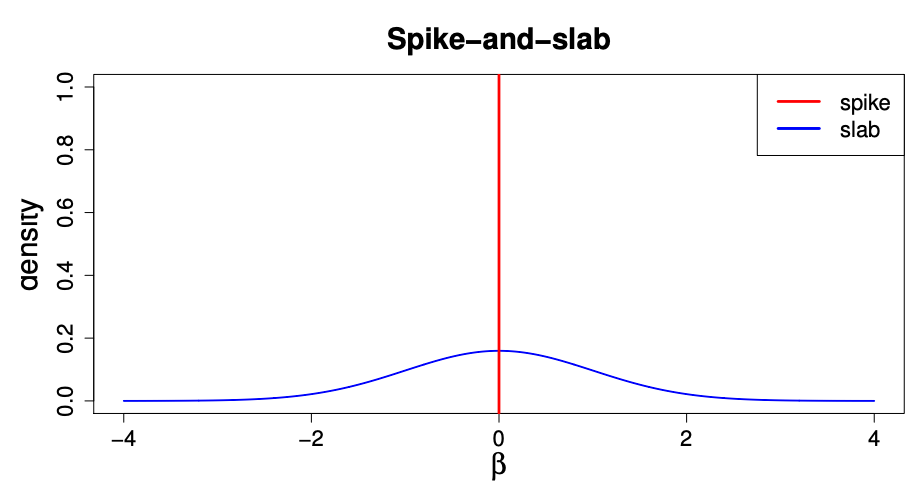
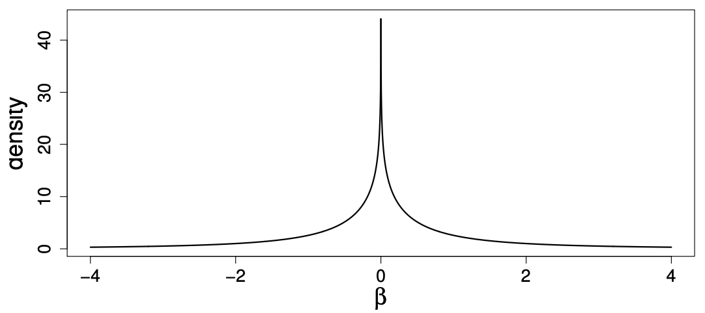
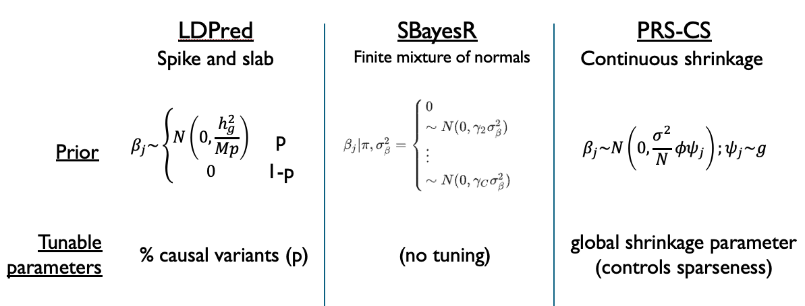

9.2 Bayesian methods for polygenic risk scores#
Recall the general form for a polygenic risk score we introduced earlier:
When constructing our scores, we have to tackle two issues:
What to set the weights \(w_j\) to?
Which set of SNPs \(S\) should we use for our score?
For the C+T method, we set the weights \(w_j\) simply to the effect sizes we learned in GWAS. To decide the set of SNPs, we tried a variety of LD-clumping and p-value thresholds to see which gave us the best score.
Here, we will consider a different class of Bayesian methods, in which we will choose the SNP weights in a different way. We’ll also make use of all the SNPs, just not a subset.
9.2.1 Bayesian vs. frequentist regression#
Recall our GWAS model for a single SNP (let’s ignore covariates):
where:
\(Y=\{y_1, ..., y_n\}\) is a vector of phenotypes for each of our \(n\) samples. (This is often scaled to have mean 0 and variance 1).
\(X_j=\{x_{j1}, ..., x_{jn}\}\) is a vector of genotypes for SNP \(j\) (0s, 1s, and 2s).
\(\beta_j\) is the effect size for SNP \(j\) (this is just a scalar value).
\(\epsilon=\{\epsilon_{1}..., \epsilon_{n}\}\) is a vector of noise terms for each sample.
When we do GWAS, we typically use a standard least squares regression to estimate the effect size \(\beta_j\). This ends up being the maximum likelihood estimate (MLE), which maximizes \(P(Y|X_j, \beta_j)\). Note that a likelihood is giving: what is the probability to observe the data I saw (here, \(Y\)), given some set of parameters and undelrying model. Our GWAS approach can be referred to as a frequentist approach: we don’t make any prior assumptions about \(\beta_j\) and just use the data given to us to try and estimate it.
On the other hand, in a Bayesian approach we could incorporate some prior knowledge. We can use Bayes’ Theorem to write:
We have:
On the left is the posterior probability \(P(\beta_j|Y, X_j)\). The posterior gives us a distribution of \(\beta_j\), taking into account both the data that we saw (\(Y\)) and the prior.
On the right we have the likelihood we already described above (\(P(Y|\beta_j, X_j)\)). This is what we try to maximize in the frequentist approach.
We also have the prior, which gives a prior distribution on \(\beta_j\) based on values we think it might take on.
The denominator here is called the evidence. It integrates over all possible values of \(\beta_j\). We’ll ignore this since it will always be the same.
In the Bayesian approach, we are interested in taking into account prior information in order to obtain the posterior distribution of \(\beta_j\).
9.2.2 Setting a prior on GWAS effect sizes#
For most complex traits, we expect that the majority of SNPs will have effect sizes close to 0, whereas a subset of SNPs will have non-zero effects. We would like a prior on \(\beta_j\) that could capture this. Of the different Bayesian PRS methods we will discuss, the main difference between them is how they set the prior.
One potential option is to consider that we have a mixture of causal and non-causal SNPs. With probability \(p\), a SNP is causal and we draw its effect from some distribution. It is common to draw the effects from a normal distribution with mean 0 and some variance \(\sigma^2_g\). With probability \(1-p\), we set the effect size to 0. This prior is known as the “spike and slab” model, which is depicted below:

Source: https://web.stat.tamu.edu/~debdeep/pres-GLT.pdf
This model is very intuitive, and it is what is used by the widely cited LDPred method. However a challenge is that the prior is not continuous which ends up making computation of the posterior distribution of \(\beta_j\) challenging.
An alternative is to use a mixture of normal distributions that takes on a similar shape to the model above, but has the advantage of being continuous. The method PRS-CS method uses a “global-local scale mixture of normals”, with prior:
where:
\(N\) is the sample size and \(\sigma^2\) is related to the noise term in the regression.
\(\phi\) is the global scale parameter. It is shared across all SNPs, and controls the sparsity of the model.
\(\psi_j\) is a SNP-specific weight, which is drawn from some continuous density \(g\).
While more complex than the simple two-way mixture in LDPred, it gives a similar looking prior:

Source: https://web.stat.tamu.edu/~debdeep/pres-GLT.pdf
Finally, a third option is presented in SBayesR, which uses a finite (discrete) mixture of normal distributions. This lies somewhere in between the choice in LDPred (one normal distribution plus a spike at 0) and PRS-CS (continuous mixture of normal distributions). Ultimately, all of these choices can be described as mixtures of normal distributions, ranging from least (LDPred) to most (PRS-CS) flexible, with the continuous solution in PRS-CS making inference of the posterior distribution the easiest. The image below summarizes these differences:

9.2.3 Marginal effects#
For complex traits, we make the assumption that the underlying model relating genotypes to phenotypes is:
That is, there are additive contributions from many different causal variants.
However, what we measure in GWAS using least squares regression, in which we fit models for one SNP at a time, are actually the marginal effect sizes (denoted by the variables with hats below)
Recall from our GWAS discussions how we often saw “skyscrapers” of many highly correlated SNPs reaching strong p-values, simply because they are correlated with something causal rather than causal themselves. It is very often the case that the marginal effect size will appear to be strong, even if the true underlying effect is not. It can also be the case that the marginal effect size ends up being lower than the actual effect size. The marginal effect sizes are a reflection of all the causal things that are tagged by a particular SNP.
9.2.4 Estimating posterior effect sizes#
Let’s first write the underlying model described above in matrix form:
where:
\(y\) is an \(N \times 1\) vector of phenotype values
\(\mathbf{X}\) is an \(N \times M\) matrix of SNP genotypes. Here, we’ll assume the columns (SNPs) have been standardized to have mean 0 variance 1.
\(\beta\) is a \(M \times 1\) vector of effect sizes for each of the \(M\) SNPs. Note this is the actual effect sizes, not the marginal effects we measure in GWAS.
\(\epsilon\) is an \(N \times 1\) vector of the noise terms, with \(\epsilon \sim N(0, \sigma^2 I)\).
Now back in the Bayesian world, we’ll set a prior on the \(\beta_j\) values:
where the \(\sigma^2_j\) will differ slightly across methods (e.g. LDPred, PRS-CS, SBayesR).
Let’s also define:
\(\hat{\beta}\): marginal effect sizes measured by individual linear regressions on each SNP \(j\). Note the marginal estimates turn out to be equal to \(\hat{\beta} = \mathbf{X}^Ty/N\)
\(D\): the LD matrix of LD between each pair of SNPs. Note \(D=\mathbf{X}^T\mathbf{X}/N\).
\(T = diag\{\sigma^2_1, \sigma^2_2, ... \sigma^2_m\}\). This encodes the information about the prior. It is just the variance terms from the prior for the \(\beta_j\)’s.
Then it turns out we can write the posterior mean of the \(\beta\) values in terms of the LD matrix \(D\), the marginal effect sizes \(\hat{\beta}\), and our priors:
This is really exciting, since we can get:
The marginal effects \(\hat{\beta}\) from a published GWAS on our trait of interest
The LD matrix \(D\) can be computed from publicly available genomes, such as the 1000 Genomes
These posterior estimates of \(\beta\) are exactly what will be used as the weights in our PRS using the Bayesian approaches.
Notes:
the variances of the priors on \(\beta_j\) values (and therefore the \(T\) matrix) will differ across methods.
This formula has parallels to penalized regression techniques, such as ridge regression. The \(T\) matrix can be viewed as a regularization term that forces us to shrink some of the \(\beta_j\) values to 0.
To actually fit these models requires a method like Gibbs sampling since there are multiple unknown parameters to estimate (e.g. \(\beta_j\)’s, \(\sigma^2\), \(\sigma_j\)’s)
9.2.5 Summary: frequentist vs. Bayesian PRS#
In the C+T approeach we:
Used the marginal effect sizes directly from GWAS
Used LD-clumping to subset the SNPs
In the Bayesian PRS approaches we:
Used posterior means of effect sizes as weights (based on marginal effects and LD)
Used all the SNPs (many of which will get set close to 0 weight)